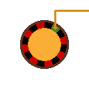
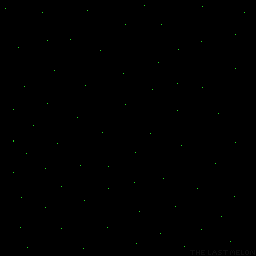

Ludwig Boltzmann was an Austrian physicist and philosopher, born on February 20, 1844, in Vienna.
He is best known for his foundational work in statistical mechanics and thermodynamics, which paved the way for modern physics.
Something Boltzmann is less well known for is his intriguing hypothesis regarding the eventual fate of the universe.
He proposed that, given enough time, the universe would eventually reach a state of maximum entropy, often referred to as "heat death."
In this scenario, energy would be evenly distributed, and no thermodynamic processes would be possible, leading to a static and featureless universe.
Heat death, or the "Big Freeze," is still widely regarded as one of the most popular end-universe scenarios among modern cosmologists.
While Boltzmann is often credited with laying the foundations for this concept, he didn't see heat death as the ultimate end of the universe.
Rather, he viewed it as the beginning of a new chapter—what might appear to be the universe's final state is, in fact, the start of a cycle.
lim
n→∞
P(En)
= 1

